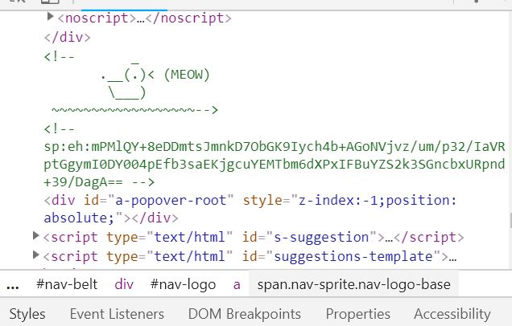

H and M
The first website that I will review is a clothing store called H and M. This has been one of my favorite online stores to shop from because there website makes it very easy for me to search or buy items. The home page of the website has a header. Their header runs across the top of the page and appears on every page of the website. This allows the customer to look at the different areas to shop in. The homepage of the website is simply, it has a white background with pictures on the front which link to other pages. On the top of the website I noticed the H and M logo. Even if you are on another page, this logo can link you back to the homepage. When you are on a page there is also a arrow that pops up as you scroll up. This arrow allows the shopper to go back to the top of the page immediately instead of having to take time to scroll through everything else. I inspected it and the code looks like this ... button class="back-to-top js-back-to-top">Back to top. My question is how do they make the arrow button only show up when you are trying to scroll up. It seems as it is timed or programmed to appear at a certain page. I tried out narrowing (minimizing)the website just like we did in class today and it seems as if they are using a template similar to liquid. The text in the header does not collide with each other which is good for the website. I find that the search tabs code to be interesting. It says class = responsive segments. This is neat because as it is the search botton it has to be responsive to whatever the consumer puts in to search a specific item. I noticed that there is a lot of spript type and div id in the coding. I am not sure what the script type = java would do? The colors of this website compliment each other well, and because of this it does not look busy at all. I like how H and M has items that is under the "also bought together." I think that this is a good strategy especially in the retail world. Overall this website is very easy to navigate, which makes the consumer very happy.
Amazon
The second website that I will review is Amazon. Amazon just like H and M is another easy website to navigate. The amazon homepage has a header just like the H an M did. This allows the customer to view the different pages available to them. The amazon website also has the logo but it is to the left of the page. This logo links to the home page. The logo is a span class and while inspecting it I noticed that it is an image. While inspecting the image I found this comment which I thought was funny!Amazons website has a lot of images therefore I noticed that there is alt of img src in the code. Which then applies to some flouts, widths, and height in the code. I also noticed that in the code it said Java Script. It seems as if amazon has more content on the pages. Along with the header there lies a side bar that has more information. Overall amazons website is a great website.

The third website that I will review is not as great as H and M or Amazon. This website is outdated and not user friendly. The website does not draw any attention to the consumer as it has just a white colored background and pictures placed on it. The homepage is exptemely long, it seemed as I scrolled down the page would never end. Although the website does have a header that links to other pages, it still looks outdated. The navigation of the website is very hard to use. The text of this website is plain and simple and does not fit the theme of what a "spa" website should. This website uses 3 colors, however it just looks too simple. I cant seem to figure out the lay out of this website? It may be one column layout. Overall, this website is not the best due to how hard it is to navigate and how it is percieved.